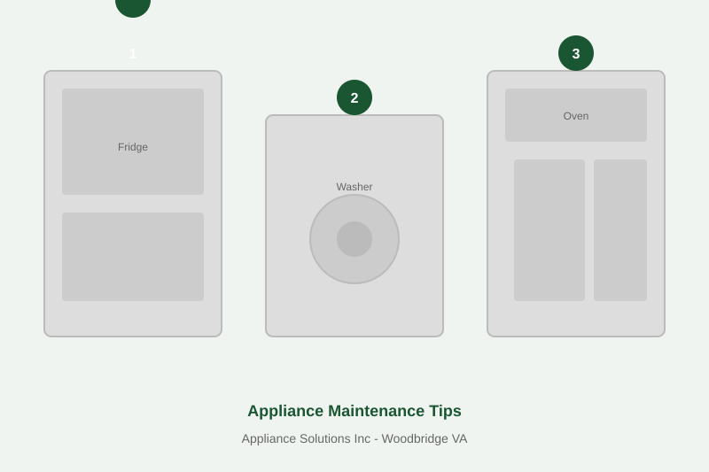

Appliance Lifespan Averages and How to Beat Them
The average American household spends $5,000-$10,000 replacing appliances every 10-15 years. With basic maintenance that takes 30 minutes per month, you can extend most appliances by 5-10 years. A refrigerator that lasts 20 years instead of 13 saves you $1,500-$3,000 in replacement costs.
| Appliance | Average Lifespan | With Maintenance | Key Maintenance |
|---|---|---|---|
| Refrigerator | 13 years | 18-20 years | Clean condenser coils twice yearly |
| Washer | 10 years | 14-16 years | Level machine, clean filter monthly |
| Dryer | 13 years | 18-20 years | Clean lint trap + vent annually |
| Dishwasher | 9 years | 13-15 years | Clean filter, run rinse aid |
| Oven/Range | 15 years | 20-25 years | Don't use self-clean excessively |
*Lifespan estimates based on industry averages. Actual results depend on usage, water quality, and brand.

Refrigerator: Clean Condenser Coils Twice a Year
Dust-clogged condenser coils force your compressor to work 30% harder, shortening its life significantly. Pull your fridge out, vacuum the coils on the back or bottom with a brush attachment. This single habit can extend your Samsung, LG, or Whirlpool refrigerator life by 5+ years. Also check door gaskets for tears - a leaky seal makes the compressor run constantly.
Washer: Level It and Clean the Filter
An unlevel washing machine vibrates excessively, destroying bearings and drum spider arms. Use a bubble level on top and adjust the feet until it's perfectly level. For front-load washers, clean the drain pump filter monthly (it's behind a small panel at the bottom front). Leave the door open after each load to prevent mold.
Dryer: Clean the Vent Line Annually
A clogged dryer vent is the #1 cause of dryer failure and a fire hazard. Clean the lint trap after every load, but also have the entire vent line from dryer to exterior wall cleaned annually. This reduces drying time by 30%, lowers energy bills, and prevents the heating element and thermal fuse from burning out. Read our complete dryer vent fire prevention guide.
Dishwasher: Run Vinegar and Clean the Filter
Most modern dishwashers have a removable filter at the bottom that collects food particles. Clean it weekly. Run an empty cycle with a cup of white vinegar monthly to dissolve mineral buildup. Always use rinse aid - it prevents hard water spots and reduces strain on the spray arms, especially in Manassas and other hard water areas.
Oven: Don't Overuse Self-Clean
The self-clean cycle heats your oven to 900F, which stresses the door lock mechanism, thermal fuse, and electronic control board. Use self-clean no more than twice a year. For routine cleaning, use baking soda paste instead. Also avoid lining the bottom with aluminum foil - it blocks airflow and can damage the element.
When Maintenance Isn't Enough
If your appliance is already showing problems despite good maintenance, it may need professional repair. Our Woodbridge VA technicians can diagnose whether a repair makes sense or if it's time to replace the appliance. The $89 diagnostic fee is waived with any approved repair.
Appliance Acting Up?
Catch small problems before they become expensive failures.
(571) 727-4482 Schedule a Diagnostic